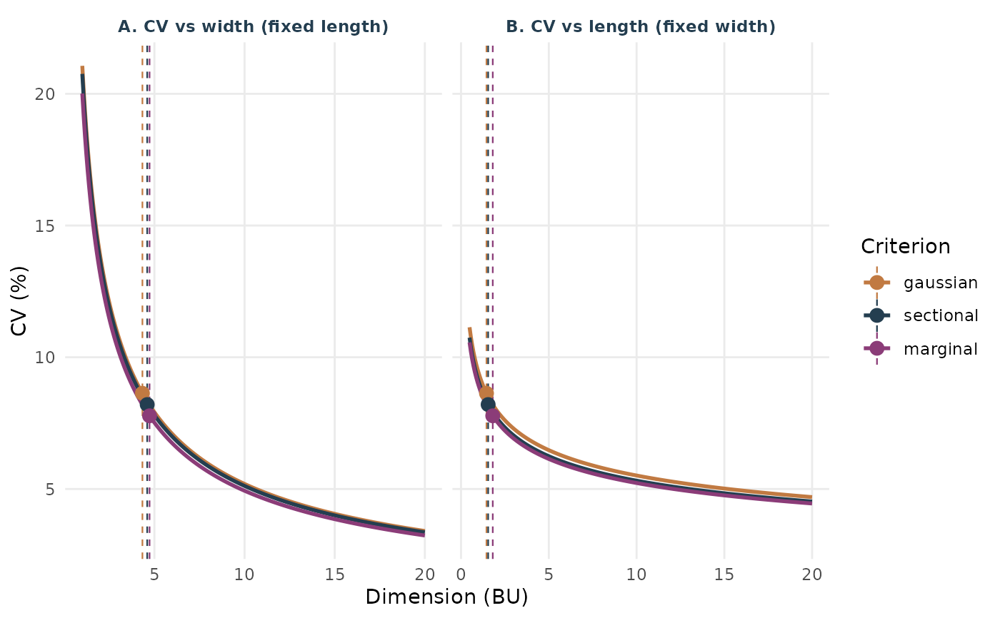

Shows width and length CV profiles through the selected Gaussian, simultaneous sectional, or marginal-efficiency solution. Use criterion = "all" to overlay profiles and solution markers for all three methods.
Usage
plot_curvature_sections(
surface, criterion = c("sectional", "gaussian", "marginal", "all"),
configurations = NULL, target_slope = 1
)Arguments
- surface
Output of fit_cv_surface().
- criterion
sectional (default), gaussian, marginal, or all.
- configurations
Optional output of trial_configurations(), used to set the displayed range.
- target_slope
Positive target decrease in CV percentage points per basic unit, used for the marginal-efficiency solution.
Value
A ggplot object. With criterion = "all", the sections through
each solution are distinguished by colour.
Examples
cfg <- trial_configurations(example_trial("rice"))
plot_curvature_sections(fit_cv_surface(cfg), criterion = "all", configurations = cfg)
